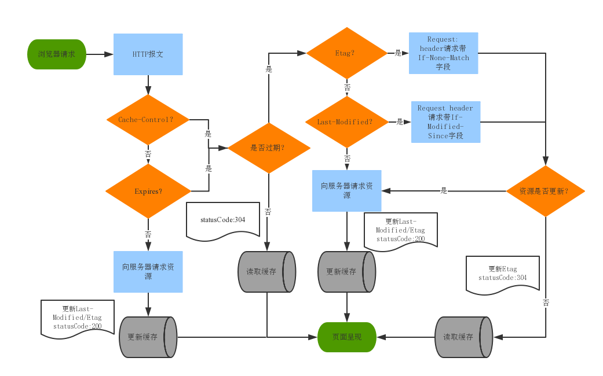

浏览器缓存（Browser Caching）是浏览器端保存数据用于快速读取或避免重复资源请求的优化机制，有效的缓存使用可以避免重复的网络请求和加快页面速度,从而提高用户体验, 目前主要的缓存机制有：http缓存，websql，cookielocalstorage, session,cacheStorage, flash缓存等, 下面将主要对http缓存机制进行详细分析.
Expires与Cache-Control原理
http首部Expires和Cache-Control字段是服务端用来约定和客户端的有效时间,格式如下：
浏览器第一次跟服务器请求一个资源，服务器在返回这个资源的同时，在response的header会加上Expires/cach-control的header；
浏览器再请求这个资源时，先从缓存中寻找，找到这个资源后，比较expires或cache-control的max-age字段值做比较, 如果在有效期内，则缓存命中，读取缓存内容，否则重新向服务器发送请求；
Header在重新加载的时候会被更新
联系和区别
- Expires规定了缓存失效时间（Date为当前时间），而Cache-Control的max-age规定了缓存有效时间（2552s), 前者是绝对时间，后者是相对时间
- Expires是HTTP1.0的东西，而Cache-Control是HTTP1.1的
- 若响应头Expires和Cache-Control同时存在，Cache-Control优先级高于Expire
缺点
- Exipires返回的是一个绝对时间，在服务器时间与客户端时间相差较大的时候，缓存命中不准确，如：随意修改客户端时钟。
如果单只设置有效时间，如文件过了有效期后，内容并没有发生改变，还是可以用缓存数据，这个时候又怎么判断服务端文件有没有更新呢？主要有两种方式：
- Last-Modified,If-Modified-since: 在约定有效期的基础上，增加文件是否修改的字段进行再次验证
- ETag, If-None-Match: 在约定有效期的基础上，增加文件版本号的验证
Last-Modified,If-Modified-since原理
|
|
浏览器第一次向服务器请求一个资源，服务器在返回这个资源的同时，在respone的header加上Last-Modified字段，表示该资源在服务器上的最后修改时间；
浏览器再次向服务器请求这个资源时，在request的header上加上If-Modified-Since字段，这个值就是上一次请求时返回的Last-Modified的值;
服务器收到资源请求时，比较If-Modified-Since和Last-Modified字段值，若相同，则说明文件没有修改，返回304 Not Modified, 浏览器从缓存中加载资源；若不相同，说明文件被更新，浏览器直接从服务器加载资源, 返回200；
重新加载资源时更新Last-Modified Header
缺点
- Last-Modified标注的最后修改只能精确到秒级，如果某些文件在1秒钟以内，被修改多次的话，它将不能准确标注文件的修改时间
- 如果某些文件会被定期生成，但有时内容并没有任何变化（仅仅改变了时间），但Last-Modified却改变了，导致文件没法使用缓存
- 有可能存在服务器没有准确获取文件修改时间，或者与代理服务器时间不一致等情形
ETag, If-None-Match原理
ETag解决了Last-Modifiend的缺陷，ETag不仅仅跟最后修改时间决定, 它是根据当前请求的资源生成的一个唯一标识符（默认是由文件的索引节（INode），大小（Size）和最后修改时间（MTime）进行Hash后得到的)
浏览器第一次向服务器请求一个资源，服务器在返回这个资源的同时，在respone的header加上ETag字段；
浏览器再次跟服务器请求这个资源时，在request的header上加上If-None-Match，这个值就是上一次请求时返回的ETag的值；
服务器再次收到资源请求时，再根据资源生成一个新的ETag，与浏览器传过来If-None-Match比较，如果这两个值相同就说明资源没有变化，则返回304 Not Modified, 浏览器从缓存中加载资源，否则返回200 资源内容。与Last-Modified不一样的是，当服务器返回304 Not Modified的响应时，由于ETag重新生成过，response header中还会把这个ETag返回，即使这个ETag跟之前的没有变化
区别和联系
如果两者同时存在，If-None-Match优先，忽略If-Modified-Since
http缓存机制流程图

用户行为与缓存
| 用户操作 | Expire/Cache-Control | Last-Modified/Etag |
|---|---|---|
| 地址栏回车 | 有效 | 有效 |
| 页面链接跳转 | 有效 | 有效 |
| 新窗口打开 | 有效 | 有效 |
| 前进/后退 | 有效 | 有效 |
| 刷新(command + r) | 无效 | 有效 |
| 强制刷新(command + shift + r) | 无效 | 无效 |
禁用缓存
下面情况无法被浏览器缓存
- HTTP信息头中包含Cache-Control:no-cache，pragma:no-cache（HTTP1.0），或Cache-Control:max-age=0等告诉浏览器不用缓存的请求
- 需要根据Cookie，认证信息等决定输入内容的动态请求是不能被缓存的
- 经过HTTPS安全加密的请求（有人也经过测试发现，ie其实在头部加入Cache-Control：max-age信息，firefox在头部加入Cache-Control:Public之后，能够对HTTPS的资源进行缓存，参考《HTTPS的七个误解》）
- POST请求无法被缓存
- HTTP响应头中不包含Last-Modified/Etag，也不包含Cache-Control/Expires的请求无法被缓存